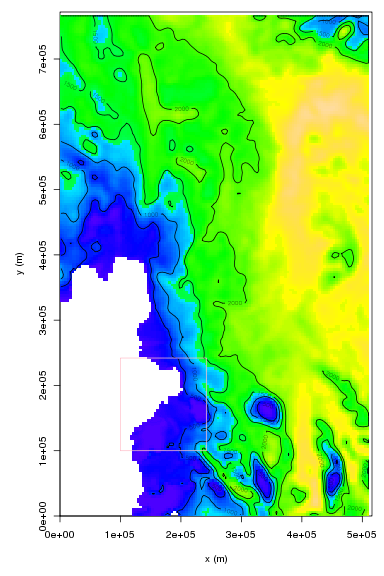
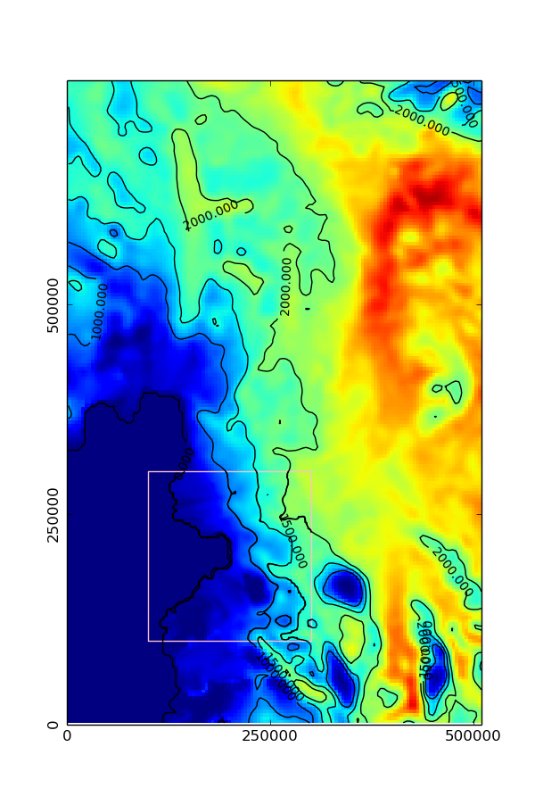
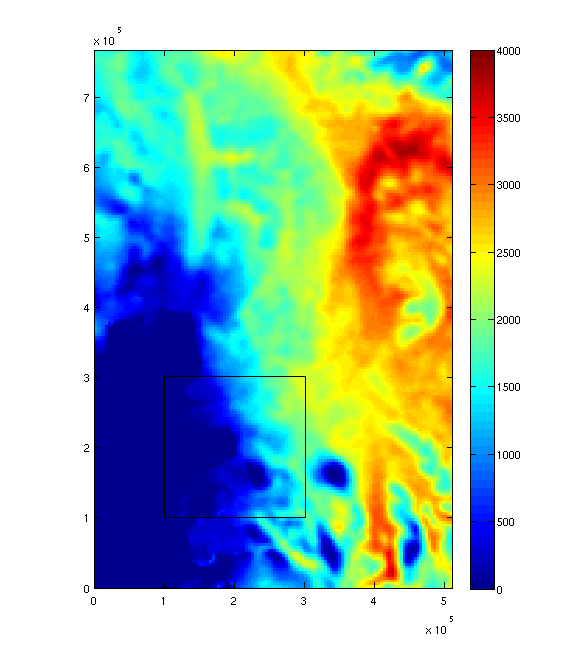

libamrfile : analyzing data with R, MATLAB, Python, etc
While VisIt is useful for plotting BISICLES output, it it often preferable to use popular tools such GNU R, Python, or MATLAB to analyze BISICLES output. libamrfile is distributed with BISICLES and provides a C-compatible interface to Chombo AMR data that can be accessed through these common tools, and through various FORTRAN versions and of course C. Note that if you want to control BISICLES rather than analyze output, e.g to interface with an atmosphere model, then the cdriver interface is more suitable
We will need to build a shared library (libamrfile.so) as part of the installation process. On some common platforms (such as the ubiquitous X86_64 with GNU compilers), the -fPIC compiler flags is needed for both C++ and Chombo Fortran (ChF) components. Make sure the -fPIC flag is set in your Make.defs.local file, e.g
cxxdbgflags = -fPIC
cxxoptflags = -fPIC
fdbgflags = -fPIC
foptflags = -fPIC -O3
These flags are already set in the current version of Make.defs.local in $BISICLES_HOME/BISICLES/docs, but were not set in older versions. If you see an error like
/usr/bin/ld: $BISICLES_HOME/Chombo/lib/libamrtools2d.Linux.64.g++.gfortran.DEBUG.a(AverageF.o): relocation R_X86_64_32 against `.rodata' can not be used when making a shared object; recompile with -fPIC
$BISICLES_HOME/Chombo/lib/libamrtools2d.Linux.64.g++.gfortran.DEBUG.a: error adding symbols: Bad value
collect2: error: ld returned 1 exit status
make[1]: *** [libamrfile.so] Error 1
Then you need to set these flags, and remove older object files
> cd $BISICLES_HOME/Chombo/lib
> make clean
GNU R
Installation
libamrfile provide an R package: assuming that you can build Chombo and BISICLES, you can use the R package installer
>cd $BISICLES_HOME/BISICLES/code
>R CMD INSTALL libamrfile
This has not been widely tested, it works best if R has been compiled with the same compiler as BISICLES/Chombo, it can easily fall foul of static/shared library paths and so on. On the other hand, it will generally be installed on a system you have plenty of control over (ie a personal computer of some sort rather than a cluster), so issues should be soluble. If the installation is successful, libamrfile can be imported into R in the usual way, ie
require libamrfile
amr.load, amr.free, amr.free.all
The amr.load, amr.free and amr.free.all functions are used to load data from Chombo hdf5 files into memory, and to free that memory when it is no longer needed. While the Chombo data is in memory, the other R functions can access it via an integer ID. So, R program will look something like:
amrID1 <- amr.load("plot1.2d.hdf5") #load plot1 data
amrID2 <- amr.load("plot2.2d.hdf5") #load plot2 data
foo(amrID1,amrID2) #some function that acesses data from plot1 and plot2
amr.free(amrID1) #free plot1 data from memory
baz(amrID1) # would fail, since this memory was freed
bar(amrID2) # ought to succeed, since plot2 is still in memory
amr.free.all() #any remaining memory is freed
amr.read.box
The easiest way to plot maps and integrate quantities of interest is through the the amr.read.box function. It allows the user to specify a rectangular box, defined as a grid on one of the AMR levels, which will be filled with uniform resolution data derived from AMR data. Some data might be piecewise or linearly interpolated from a coarser resolution part of the mesh, other data could be averaged from finer resolution regions. The example code below assumes a file named plot.amundsen.2d.hdf5 is in the current working directory
require(libamrfile)
amrID <- amr.load("plot.amundsen.2d.hdf5")
#read a box of thickness data from level 0
#first, determine the domain corners
dom = amr.query.domaincorners(amrID,lev=0)
b0 <- amr.read.box(amrID,lev=0,lo=dom$lo,hi=dom$hi,comp="thickness")
#read a box of thickness data from level 0. some of this data
#will be copied from level 0, other data will be from finer levels
#here we use piecewise interpolation, use interpolation_order=1 for linear
b1 <- amr.read.box(amrID,lev=1,lo=c(50,50),hi=c(150,150),comp="thickness",interpolation_order=0)
#free up memory storing the the amr data
amr.free(amrID)
#plot box data
par(mfrow=c(1,1))
thkzl <- c(1,4000.0) #suitable range for thickness data
thkcol <- topo.colors(128)
#low res data
image(b0$x,b0$y,b0$v,zlim=thkzl,col=thkcol,xlab="x (m)", ylab="y (m)")
contour(b0$x,b0$y,b0$v,add=TRUE,lev=c(0,500,1000,1500,2000))
#paste the higher res data on top
image(b1$x,b1$y,b1$v,add=TRUE,zlim=thkzl,col=thkcol)
contour(b1$x,b1$y,b1$v,add=TRUE,lev=c(0,500,1000,1500,2000))
#draw a border round the high res box
dx = b1$x[2] - b1$x[1]
rect(min(b1$x)-dx/2, min(b1$y)-dx/2,max(b1$x)+dx/2, max(b1$y)+ dx/2,border="pink")
amr.free.all()
The resulting figure should show a color-map and contour plot of ice thickness, with a high resolution box

Python
Python access is through a collection of modules that interface with the shared library (libamrfile.so). So, before using the python functions, the library needs to be built
> cd $BISICLES_HOME/BISICLES/code/libamrfile
> make libamrfile.so
Python then needs to know where to look for this library and the modules that access it. Set the relevant environment variables : assuming bash
> export LD_LIBRARY_PATH=$BISICLES_HOME/BISICLES/code/libamrfile:$LD_LIBRARY_PATH
> export PYTHONPATH=$BISICLES_HOME/BISICLES/code/libamrfile/python/AMRFile:$PYTHONPATH
The Python package is called amrfile, so far it has one module (io), which can be imported in the usual manner
Python 2.7.4 (default, Apr 30 2013, 14:13:25)
[GCC 4.7.2] on linux2
Type "help", "copyright", "credits" or "license" for more information.
>>> from amrfile import io as amrio
load, free, freeAll
The load, free, and freeAll functions are used to load data from Chombo hdf5 files into memory, and to free that memory when it is no longer needed. While the Chombo data is in memory, the other Python functions can access it via an c_int ID. So, Python programs will look something like:
>>> from amrfile import io as amrio
>>> #load a file and create a lookup
>>> amrID1 = amrio.load("plot1.2d.hdf5")
>>> amrID2 = amrio.load("plot1.2d.hdf5")
>>> #operations should be able to access plot1 and plot2 data through amrID1 and amrDI2
>>> amrio.free(amrID1)
>>> #operations should no longer able to access plot1 data through amrID1
>>> amrio.freeAll()
>>> #operations should no longer able to access any data
readBox2D
The easiest way to plot maps and integrate quantities of interest is through the the readBox2D function. It allows the user to specify a rectangular box, defined as a grid on one of the AMR levels, which will be filled with uniform resolution data derived from AMR data. Some data might be piecewise or linearly interpolated from a coarser resolution part of the mesh, other data could be averaged from finer resolution regions.
The example code below assumes a file named plot.amundsen.2d.hdf5 is in the current working directory
from amrfile import io as amrio
import numpy as np
import matplotlib.pyplot as plt
import matplotlib.colors as col
import matplotlib.patches as pat
amrID = amrio.load("plot.amundsen.2d.hdf5")
thkcomp = "thickness"
thklim = col.Normalize(0.0,4000.0) # limits for thickness colormap
thkc = [0,1000,1500,2000]
#read a box of thickness data at the lowest resolution
level = 0
#first, work out the domain corners
lo,hi = amrio.queryDomainCorners(amrID, level)
order = 0 # interpolation order, 0 for piecewise constant, 1 for linear
x0,y0,thk0 = amrio.readBox2D(amrID, level, lo, hi, thkcomp, order)
#set up figure axes
asp = (max(y0)-min(y0))/(max(x0)-min(x0))
fig = plt.figure(1,figsize=(6, 6*asp))
plt.xlim (min(x0),max(x0))
plt.ylim (min(y0),max(y0))
plt.xticks([0,250e+3,500e+3])
plt.yticks([0,250e+3,500e+3],rotation=90)
#color and contour plot
fig = plt.pcolormesh(x0,y0,thk0,norm=thklim,figure=fig)
cs = plt.contour(x0,y0,thk0,thkc,figure=fig,norm=thklim,colors='black')
plt.clabel(cs, inline=1, fontsize=10)
#read thickness data at level 1 resolution
lo = [50,50]
hi = [150,150]
level = 1
x1,y1,thk1 = amrio.readBox2D(amrID, level, lo, hi, thkcomp, order)
plt.pcolormesh(x1,y1,thk1,figure=fig,norm=thklim)
plt.contour(x1,y1,thk1,thkc,figure=fig,norm=thklim,colors='black')
#rectangle around the highres area
dx = x1[1] - x1[0]
c=[min(x1)-dx/2.0,min(y1)-dx/2.0]
w = max(x1)-min(x1) + dx/2.0
h = max(y1)-min(y1) + dx/2.0
plt.gca().add_patch(pat.Rectangle((min(x1)-dx/2.0,min(y1)-dx/2.0) , w, h, edgecolor = 'pink', fill=False))
plt.savefig("libamrfile_python.png")
amrio.free(amrID)
The resulting figure should show a color-map and contour plot of ice thickness, with a high resolution box

MATLAB
MATLAB is not supported since ages ago: YMMV
MATLAB access is through a collection of functions that interface with the shared library (libamrfile.so). First, the library needs to be built
> cd $BISICLES_HOME/BISICLES/code/libamrfile
> make libamrfile.so
Then, add $BISICLES_HOME/BISICLES/code/libamrfile/, $BISICLES_HOME/BISICLES/code/libamrfile/src and $BISICLES_HOME/BISICLES/code/libamrfile/matlab to the MATLAB search path. There are a number of issues associated with MATLAB 's tendency to carry around (potentially conflicting) versions of shared libraries around, those we have seen are described below
amr_load, amr_free, amr_free_alll
The amr_load, amr_free, and amr_free_all functions are used to load data from Chombo hdf5 files into memory, and to free that memory when it is no longer needed. While the Chombo data is in memory, the other MATLAB functions can access it via an pointer to an integer ID. So, MATLAB programs will look something like:
>> amrID1 = amr_load('plot1.2d.hdf5');
>> amrID2 = amr_load('plot2.2d.hdf5');
>> %operations should be able to access plot1 and plot2 data through amrID1 and amrDI2
>> amr_free(amrID1)
>> %operations should no longer able to access plot1 data through amrID1
>> amr_free_all()
>> %operations should no longer able to access any data
amr_read_box_2d
The easiest way to plot maps and integrate quantities of interest is through the the amr_read_box_2d function. It allows the user to specify a rectangular box, defined as a grid on one of the AMR levels, which will be filled with uniform resolution data derived from AMR data. Some data might be piecewise or linearly interpolated from a coarser resolution part of the mesh, other data could be averaged from finer resolution regions.
The example code below assumes a file named plot.amundsen.2d.hdf5 is in the current working directory
amrID = amr_load('plot.amundsen.2d.hdf5');
thkname = 'thickness'; % name of the ice thickness data
thkrange = [0,4000.0]; %sensible range for thickness data
%read data at the coarsest (level 0 resolution)
level = 0;
%work out the domain corners for level 0
[ lo,hi ] = amr_query_domain_corners(amrID, level);
interp_order = 0; %0 for piecewise constant interpolation, 1 for linear
[ x0,y0,thk0 ] = amr_read_box_2d( amrID, level, lo, hi, thkname, interp_order );
hold off;
imagesc(x0,y0,thk0,thkrange); colorbar();
axis image % make the pixel aspect ratio 1:1
set(gca,'ydir','normal'); %put thk(1,1) at the bottom left
hold on;
thkc = [500.0,1000.0,1500.0,2000.0];
%read data at a finer (level 1 resolution)
level = 1;
lo = [50,50]; hi = [150,150]; %box corners
interp_order = 0; %0 for piecewise constant interpolation, 1 for linear
[ x1,y1,thk1 ] = amr_read_box_2d( amrID, level, lo, hi, thkname, interp_order );
%imagesc(x1,y1,thk1,thkrange);
%draw a rectangle around the high res data
dx = x1(2)- x1(1);
w = max(x1)-min(x1)+dx;
h = max(y1)-min(y1)+dx;
rectangle('Position',[min(x1)-dx/2.0,min(y1)-dx/2.0,w,h]);
amr_free(amrID);
The resulting figure should show a color-map of ice thickness, with a high resolution box

MATLAB issues
MATLAB carries around some system libraries in case the installed operating system lacks them. You may find that when you attempt to load the shared library, you see an error along the lines of
>> loadlibrary('libamrfile.so','src/libamrfile.H')
Error using loadlibrary (line 419)
There was an error loading the library
"$BISICLES_HOME/BISICLES/code/libamrfile/libamrfile.so"
/opt/matlab-R2013a/bin/glnxa64/../../sys/os/glnxa64/libstdc++.so.6: version
`GLIBCXX_3.4.15' not found (required by
$BISICLES_HOME/BISICLES/code/libamrfile/libamrfile.so)
There is a note included with MATLAB, e.g
> cat /opt/matlab-R2013a/sys/os/glnxa64/README.libstdc++
The GCC runtime libraries included here:
libstdc++.so.6.0.13 libgcc_s.so.1 libgfortran.so.3.0.0
and associated symlinks are part of gcc-4.4.6, available from ftp.gnu.org. They are included with MATLAB in the event that your distribution does not provide them.
Even when a directory containing a newer version of libstdc++ is named in LD_LIBRARY_PATH, MATLAB loads its own.
One way to be compatible with MATLAB might be to compile Chombo and
BISICLES and libamrfile with the same tool chain (gcc-4.4.6 in this
case, and hdf5 v 1.8.6). Alternatively Forcing
MATLAB to load the newer libstdc++ by unlinking the symlinks in
/
> cd /<path-to-MATLAB>/sys/os/glnxa64/
> unlink libstdc++.so.6
> unlink libgfortran.so.3
Obviously, write access to the MATLAB directories is needed. You might also need to unlink and replace MATLAB 's own copies of libhdf5_hl.so and libhdf5.so: they are typically older versions and will cause a fatal error
> cd /<path-to-MATLAB>/bin/glnxa64/
> unlink libhdf5.so.6
> unlink libhdf5_hl.so.6
> ln -s /<path to a compatible libhdf5.so> libhdf5.so.6
> ln -s /<path to a compatible libhdf5_hl.so> libhdf5_hl.so.6
If you need to build these libraries, then something like
> wget http://www.hdfgroup.org/ftp/HDF5/prev-releases/hdf5-1.8.9/src/hdf5-1.8.9.tar.bz2
> tar -jxf hdf5-1.8.9.tar.bz2
> cd hdf5-1.8.9
> CC=gcc CFLAGS=-fPIC ./configure --prefix=<somewhere sane> --enable-shared=yes
should provide libhdf5.so.7 and libhdf5_hl.so.7. Alternatively, work out which version of hdf5 MATLAB has included, and compile Chombo and BISICLES against that version